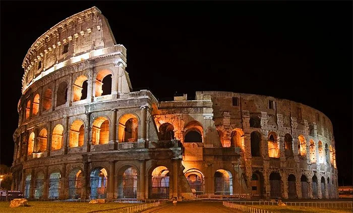

Roma è una città ricca di storia, cultura e fascino senza tempo. Capitale d’Italia, è famosa per i suoi monumenti antichi, come il Colosseo, il Foro Romano e il Pantheon, che raccontano la grandezza dell’Impero Romano. La città è anche il cuore della Cristianità, con il Vaticano e la Basilica di San Pietro come principali luoghi di culto. Le sue piazze, come Piazza di Spagna e Piazza Navona, sono centri vivaci dove arte, storia e vita quotidiana si intrecciano. Roma è anche un luogo dove la gastronomia gioca un ruolo fondamentale, con piatti tipici come la carbonara e la coda alla vaccinara. Passeggiando per le sue strade, si può respirare un'atmosfera unica, dove il moderno si fonde con il passato. Il clima mite e il paesaggio caratterizzato dalle colline offrono panorami mozzafiato. Ogni angolo di Roma racconta una storia, rendendo la città una meta imperdibile per chi cerca emozioni senza tempo.